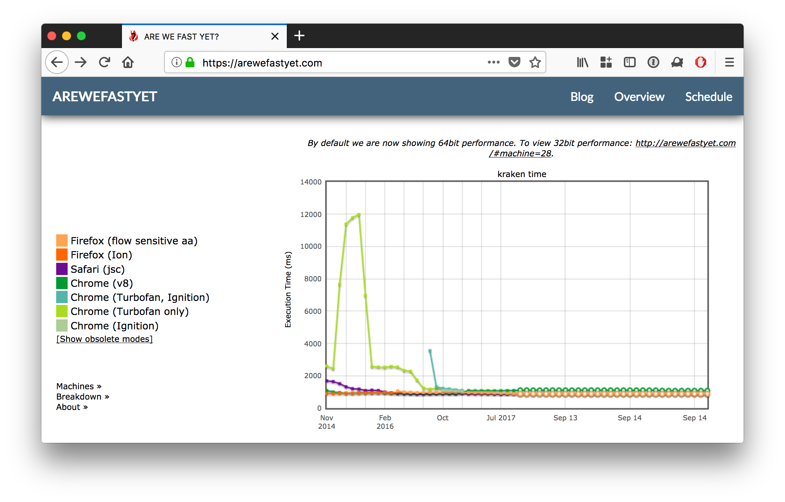
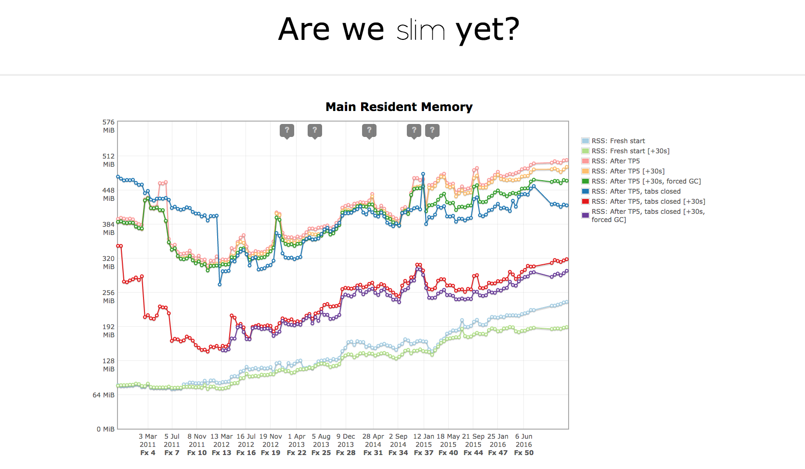
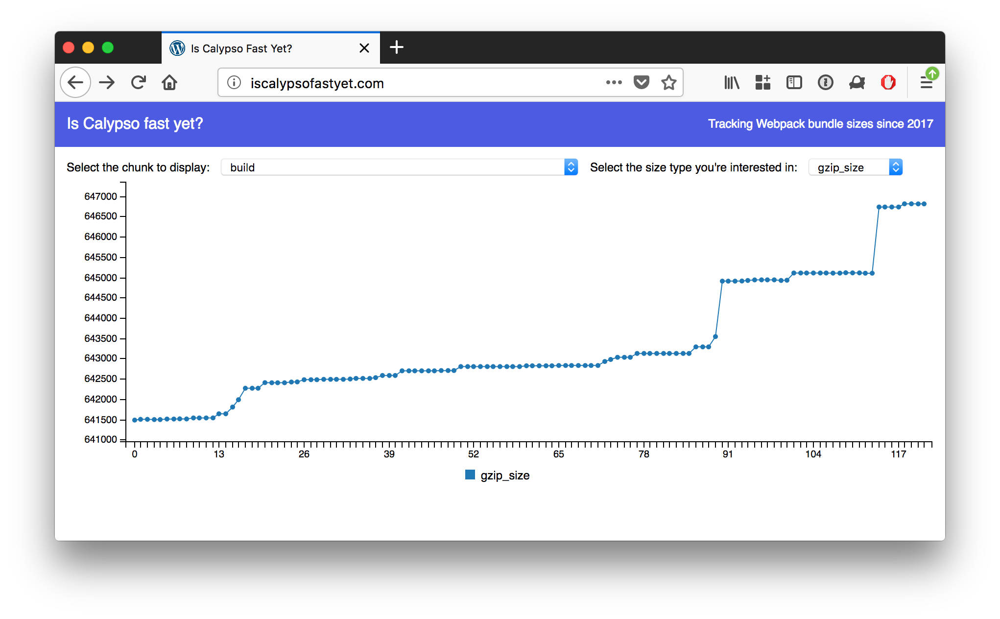
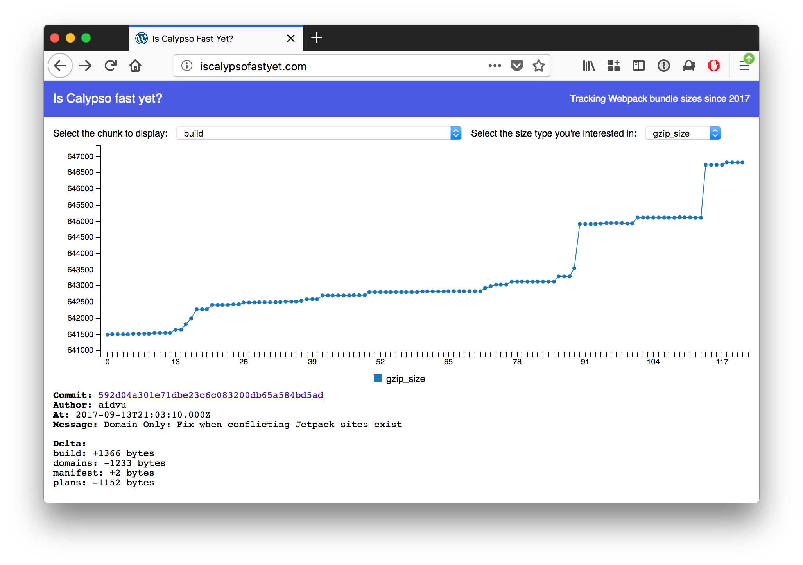

class: center, middle # Is Calypso Fast Yet? .image[] Jarda Šnajdr — Engineer on Stark --- class: center, middle ### Browsers care a lot about performance .image[] --- class: center, middle ### arewefastyet.com .image[] --- class: center, middle ### areweslimyet.com .image[] --- class: center, middle ### iscalypsofastyet.com? Let's start by tracking the size of JavaScript assets shipped to our users' browsers. --- class: center, middle .image[] --- class: center, middle .image[] </div>